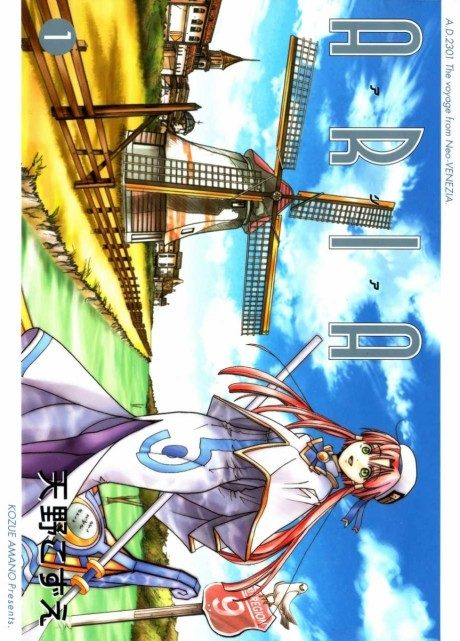

MangaDone
Anime
MangaDone
Anime
MangaARIA The ANIMATION
ARIA The ANIMATION
AniList7.6
Animeter—
3 seasons52 ep
MangaDone
3 seasons, 52 episodes
In airing order. Episode numbers on this site count straight through every season, so season 2 starts at episode 14.
1
2005 · TV
ARIA The ANIMATION
Episodes1–1313 ep
2
2006 · TV
ARIA The NATURAL
Episodes14–3926 ep
3
2008 · TV
ARIA The ORIGINATION
Episodes40–5213 ep
Films, OVAs and specials
Not counted in the episode numbers above.
·
2007 · OVA
ARIA The OVA ~ARIETTA~
·
2015 · Special
ARIA The AVVENIRE
·
2021 · Film
ARIA The CREPUSCOLO
·
2021 · Film
ARIA The BENEDIZIONE
Sources: AniList